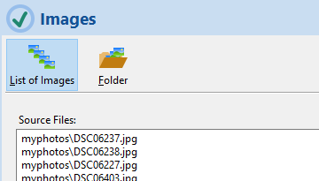
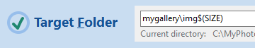
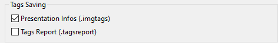
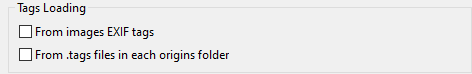
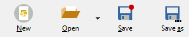
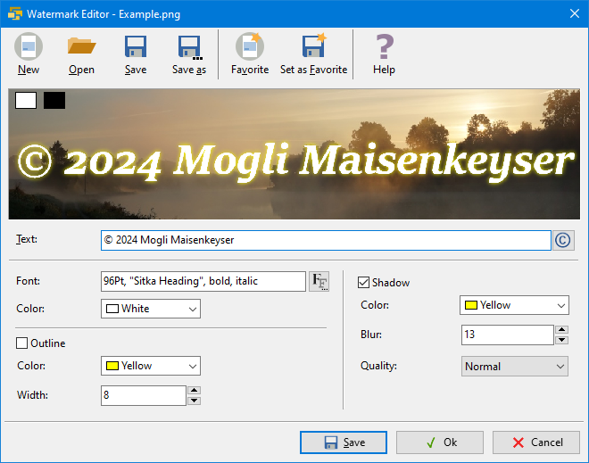

Overview
ImageResize 4.2 is an app for resizing JPEG and PNG images (also called scaling or resampling). It can process many images and create presentations (web galleries).
Contents
OverviewSource Images
Sizes
Target Folder
Rename and shuffle
Watermark
Quality
Tagging
Presentation
Loading and Saving
Settings
Commandline Parameters
Watermark Editor
Template Engine
List of available Placeholders
List of available Functions
Features
- Scaling JPEG and PNG images
- Parallel processing of many images
- Scale any image into multiple sizes
- Up- and down-scaling
- Sharpen the created Images
- Creates various presentations (for the web browser)
- Integration of customized presentation templates
- Choosing of interpolation for good results
- Optional watermark
- EXIF tags (title, timestamp, copyright)
- GUI, CLI and API interface
- Controlled file renaming
- Random shuffling of images
- Save the settings in project files
What it can't do
- Cutouts, image distortion and other transformations
- Format conversion (JPEG remains JPEG and PNG remains PNG)
- Transfer all EXIF tags
 Overview
Overview
The program requires at least the following 3 pieces of information:
- The list of image files or a source folder with file filter
 - One or more target sizes
- The target folder

At the end, press to start resampling.
Source files
ImageResize can resample many image files. The list of images consists of path/filename and
- can be edited manually
- can be selected in the selection dialog with <CTRL> and <SHIFT>
- can be supplemented by dragging image files from Windows Explorer
- can be specified by specifying a source folder with a file filter
- can include relative path information
The list may contain JPEG and PNG files. The file names can be retained or renamed. Relative paths refer to the location of the project file (.irs) or the last current directory.
Sizes
A size in pixels refers to the longer side of the image.
ImageResize can produce multiple sizes for each image. Enter a list of sizes, separated by a comma, or select sizes from the suggestions. You can specify any size greater than 0.
You can deselect sizes from your list so that they remain in the list but are not taken into account. To do this, click the checkbox or press the <SPACE>> key.
The colored background of the sizes is only an indication of the usual use:
- THUMBNAIL for small previews
- DOCUMENT for images to embed in a document
- SCREEN for a full screen view
The selected sizes are given identifiers so that they can be used via a name using the placeholder $(SIZENAME). The placeholder can be used in the following places:
- In the target folder, e.g.: "img$(SIZENAME)"
- In a renaminf template string, e.g.: "img$(INDEX.ifmt(1,auto))$(SIZENAME).$(FILEEXT)"
- In a presentation template
Target folder
A destination folder must be specified. You can type it directly or select with the button.
To avoid target name conflicts when multiple target sizes are specified, you can either create different file names with Rename, or by each size containing its own destination folder. The name of the target folder must be entered contain the placeholder $(SIZE) or $(SIZENAME).
 Rename and shuffle
Rename and shuffle
There are some reasons, why you must rename the created images. One is ff you want to create images of multiple sizes into one directory.
Click Apply and choose one of the possible strategies:
Strategy "Simple"
The simple filename template produces names like this: img085.jpg. File numbering starts at 1 and does not include size (in pixels). Then it is necessary to create a separate directory for each size. In addition Insert the placeholder $(SIZE) or $(SIZENAME) into the template of the target folder.
In the simplest case, the file name template is "img$(INDEX.ifmt(1,3).$(FILEEXT)". The INDEX is the 0-based sequential number of the source file in the list. The numbers 1 and 3 after the INDEX keyword mean that the index starts at 1 and will contain 3 digits with leading zeros.
Strategy "Advanced"
The file name template in this case is e.g. "img$(INDEX.ifmt(1,3))_$(SIZE).$(FILEEXT)", to create all files in the same directory without naming conflicts. It creates a file name like img085_1920.jpg. The filename conflict becomes avoided by using the $(SIZE) wildcard.
Strategy "Custom"
To have the program generate a suitable file name, you can here provide your own template. The template contains placeholders for special values that are created and inserted during processing.
Examples of valid templates in the case where the resulting filenames do not create a conflict for different sizes in the common directory, could look like this:
"img$(INDEX.ifmt(1,3))_$(SIZE).$(FILEEXT)"
results in "img012_1920.jpg"
"$(FILETITLE)_$(SIZE).$(FILEEXT)"
results in "DSC3240_1920.jpg"
"$(FILETITLE)_$(SIZENAME).$(FILEEXT)"
results in "DSC3240_SCREEN.jpg"
The available placeholders in the context of Renaming are in this Table and the available functions are here.
Shuffle
Shuffling means that the lexical order of the target file names is random. This requires the automatic renaming of the target files.
ImageResize first shuffles the order of the images before producing the resampled images. This only makes sense if the target file name contains the index of the image at the beginning of the variable part of the name so that the lexical order is ascending. A suitable template for the target name is, for example "img$(INDEX.ifmt(1,3)).$(FILEEXT)".
The Seed parameter controls the random sequence. A seed of 0 ("Random") will produce a different sequence each time processing is started. Any other constant value will shuffle the sequence in the same way, as long as the length of the image list does not change.
Watermark
A watermark is a semi-transparent small image that, for example, adds a copyright to the target image. The image must be in PNG format and can have an alpha channel (transparency). When that image is printed, additional opacity can be specified. 20 to 30 percent is good for a slightly visible appearance, from 50 percent the water pattern becomes clearly visible.
Apply
Select this option to activate the watermark.
Filename
Specify a filename of a PNG file whose image will be scaled into each target image.
Normally it is sufficient to specify a common file for all target sizes because the size is adjusted for each image. A watermark image in good resolution is unique created for everyone.
In order to be able to set a different water image for each target size, you must Specify the placeholder $(SIZE) in the name of the water image file. In this case, ImageResize expects a water image for each size, its name corresponds to the template, i.e. contains the size.
You can create watermark files with any program that supports the PNG format, for example:
- Inkscape - a free vector graphics editor
- Gimp - a free raster graphics program
- Greenfish Icon Editor - a graphical raster image editor
- with the inbuilt watermark editor
You can use transparency, but note that ImageResize also requires a You can put opacity on top of it.
Opacity
An opacity of 0 percent makes the water image disappear, while 100 percent makes it fully opaque.
| 10% |  |
20% |  |
| 30% |  |
40% |  |
| 50% |  |
60% |  |
| 70% |  |
80% |  |
| 90% | 100% |
Size
Size is in percent of the available width.
1 percent is the smallest and 100 percent is the full width.
Horizontal Position
The position is given as a percentage of the available space and is counted from the top left.
0 percent is left-aligned, 50 percent is centered, and 100 percent is right-aligned.
Vertical Position
0 percent is at the top, 50 percent is vertically centered, 100 percent is at the bottom.
 Quality
Quality
The quality of the result depends on these settings. You can set the compression level for JPEG and PNG formats, control the resampling algorithm (interpolation) an sharpening.
Interpolation
Resampling or scaling means building a new image with smaller or larger dimensions with the same aspect ratio. This requires the colors of the pixels of the target image be determined by interpolation. In the simplest case - stretch (without interpolation) - the pixel gets the color value of the pixel closest to it in the original. This leads to loss of information and quality when down-scaling and poor quality when up-scaling.
There are 11 resampling algorithms available. Apart from the simple Stretch, the algorithms are interpolations. Depending on the scaling, they have different effects.
The default is "Best Quality". "Mitchell" is used for down-scaling and "Spline" is selected for up-scaling up.
Take a look at the effect of different interpolations.
JPEG quality

JPEG has a lossy compression. A higher quality results in larger files. For JPEG, 75 to 95 percent is a good choice. But 50% has yet a surprisingly good quality with small files.
PNG compression

The PNG format always compresses losslessly, but for natural images it results in low compression, so it is mainly useful for artificial images where there are large monochromatic areas.
There are 4 degrees of compression available:
- Default setting - normal compression
- None
- Fastest - low and fastest compression
- Maximum - highest and slowest compression
Sharpen
The resampled image will be sharpened.
There are 4 predefined amounts of sharpening available, but you can enter any other:
- Default (100) - good sharpening
- None (0)
- Light (50) - slightly sharpened
- Strong (200) - strongly sharpened
Instead of choosing one of the predefined sharpening amounts, you can enter any Value from 0.0 (none) to any positive value. 1.0 is a good sharpening for natural pictures.

 Tagging
Tagging
General
You can add certain meta information to the generated images. Normally such meta information for photos (e.g. JPEG) is saved in EXIF format within the file. Modern cameras store a lot of technical information. The most important meta information for ImageResize are Title, Timestamp and Copyright.
Tagging with ImageResize means that images created with ImageResize are provided with certain of this information. It is supported by ImageResize for two reasons:
- To maintain your copyright when sharing images
- As a basis for the presentation as a private or public website
There are the following strategies for passing such tags in ImageResize:
- As EXIF tags within JPEG images
- As an .imgtags file that is automatically attached to every target directory and every image size
There are the following sources for tags:
- The EXIF tags of the original files
- .tags files that you can attach to the original images folders
EXIF tags
Unfortunately, ImageResize currently only supports certain EXIF tags:
-
Title
A brief description of the image content as it would be rendered by a viewing program. The title is stored as an EXIF tag ImageDescription. -
Timestamp
The date a photo was taken. -
Copyright
The copyright tag consists at least of the parts copyright symbol © or (c), the year and the author. E.g. "© 2024 Mogli Maisenkeyser, www.atomek.de". Attach a web domain to leave no doubt.
In the Tagging settings dialog you can select which of the tags mentioned should be included in the target images. The copyright entries for all images can be overwritten with a new character string.
Preparing to tag your Images
There are two ways to tag the copies created:
1. Expand the original files with EXIF meta information
This only works with JPEG images, but not with PNG images. You can do this
- In the properties dialog of Windows Explorer in the "Details" tab, the tags Title, Recording date and Copyright to change.
- Use a program like ExifTool or RawTherapee.
2. Preparing the tags in .tags files
Using any simple text editing program, such as Windows Notepad (notepad.exe), write a list of tags and save the UTF-8 encoded file in the directory with the original files under the name “.tags”. If you have multiple directories with images, put a .tags file in each directory.
A .tags file is a UTF-8 encoded CSV (comma separated list) file. The title bar contains the names of the columns (Filename, Title, Timestamp, Copyright). Below this there is a line for each image with the fields corresponding to the header line.
Filename, Title, Copyright DSC04262.jpg, Labore Sanitas, (c) 2023 ATOMEK DSC04264.jpg, Leuchtturm am Hafen, (c) 2023 ATOMEK DSC04288.jpg, "Heimfahrt durchs Watt, herrlich", (c) 2023 ATOMEK
The first column must be named "Filename" and contains the name of the file without the path. The order of the other columns and the order of the rows are insignificant. You can also introduce your own fields, used in the presentation. If you want a field to contain commas or leading spaces, enclose the value in double quotes. The last fields of a line can be missing - no commas need to be included follow empty values. The asterisk * stands for a value that should be taken over from the previous line.
If you create multiple .tags files in different directories, they can differ in their structure and they can have different column names. If values repeat according to the value of the previous line, enter * as value.
Tagging Settings
Tags Saving
Here you control whether the found tags should be saved in .imgtags files in the target folders. The .imgtags files are small compared to the image files.
.tagsreport files are more general CSV files for future use and for your own programs. They are not needed by ImageResize.
.imgtags files are a prerequisite for creating a presentation and are generated by default.
Tags Loading
If you want to process tags, you must specify where they should come from. They can come either from the EXIF information of the JPEGs or from their .tags files or both. If they come from both, the .tags files take precedence. For example, the copyright tag is included in the EXIF information of the photo and there is also a copyright column in the .tags file, then the value is taken from the .tags file.
If you want to save tags but don't specify a tag source, ImageResize will automatically search for .tags files even if You have not explicitly stated this.
EXIF Tagging

Here you can determine whether the generated images should receive EXIF tags. Normally the images produced do not contain any Meta information from the original files. The title will be in EXIF field "ImageDescription" stored. You can override the copyright tag for all generated images.
If you specified both EXIF and .tags files as the source (Tags Loading), the .tags files take precedence. The EXIF meta information of the original files then will only be used if the .tags files for the respective image does not have any fields defined.
 Presentation
Presentation
The most important innovation of version 4.0 is the introduction of the presentation of your images. The presentation is a web gallery that you can view using your web browser.
Create a Presentation
Assuming you have previously scaled your images to a suitable size, select the dialog Presentations... .
- select one of the available presentations, e.g. "Info 1.0"
- open the relevant .imgtags file with the meta information
- In the settings, enter the title of the gallery and other information
- Click Create
- View the created presentation with

If you click "Show" multiple times, your browser may open a new tab each time. You can instead, reload the presentation currently displayed in your browser.
If you close the dialog with Ok, the settings will be adopted into the current project.
Open and save Project Files
You can save the current settings as a project with the .irs extension. These are simple text-based INI files.
When opening a project file, the current directory is set to the directory Project file set. This allows you to specify path information relatively to make the project and its images relocatable.
You can adjust how far ImageResize alerts you to saver changed settings. In the most convenient case, ImageResize always automatically saves the current settings.
You can change this behavior in the Settings dialog.
 When settings are changed, this is indicated by a red dot in the save icon.
When settings are changed, this is indicated by a red dot in the save icon.
 Settings
Settings
Processing
- Threads - ImageResize can make better use of the system's computing power through multi-threading.
Single means that only one core is used - processing becomes correspondingly slow. You can go up to the total number of available cores (=Maximum). This can multiply the processing speed, e.g. 5-fold with 12 hyperthreads instead of just one. - Stop on Error - If an error occurs while processing an image, it will stop as soon as it occurs is possible. When using multiple threads, this can happen with a delay.
In systems with Hyperthreading, the number of virtual cores is higher than the number of physical cores. If you have 12 cores, only 6 of which are physical, that results in the use of 12 threads Compared to 6 threads, the processing speed only increases by around 8 percent.
 Save
Save
- Behavior
This setting controls the behavior of the application to prevent data loss.
- Standard - Queries about saving without automatic saving of the settings
- Comfortable - No questions about saving, but security through automatic saving
- Neurotic - Questions about saving and still automatic saving
- Chuck Norris - No questions, no backup
- Relative paths when saving ensures that all path information is saved relative to the project file. This allows project files with their images to be moved without having to adjust the paths.
Command Line Parameters
These refer to the graphical application ImageResize.exe. There is also the command line program imgres.exe with significantly more options.
filename.irs
You can have ImageResize load an .irs file on startup by passing the filename as a command line parameter. This allows the ImageResize application to be associated with the .irs extension in the systems Control Panel.
-A or -AUTOSTART
Makes ImageResize automatically press the Run button at startup.
-X or -AUTOEXIT
Causes the application to close automatically after processing is finished.
-L EN or -LANGUAGE EN
The application is developed for the English language, but there is a German localization that automatically appears on German systems. This behavior can be prevented with the switch.
To have ImageResize automatically resample a list of images, first save a suitable .irs file and then start the program with these command line parameters:
C:\Program Files\ImageResize\ImageResize.exe C:\mylist.irs -A -X
 Watermark Editor
Watermark Editor
With the built-in watermark editor you can create a lettering with a some useful decorations.
The preview shows you what the watermark will approximately look like, but without the additional transparency that you can specify in the watermark settings.
 To get an impression of what your watermark looks like on a dark or light background, press one of these buttons .
To get an impression of what your watermark looks like on a dark or light background, press one of these buttons .

With this button you can save the dialog settings as a .was file and load it again later. The generated PNG image of the watermark is saved next to the .was file.
You can save your current favorite settings without a file name Save favorites and easily retrieve them later.
| Text | Enter the line of text that should be displayed in the watermark here. The © symbol with <OLD> <0> <1> <6> <9> or with that button. |
| Font | Choose a font with the size in points, a font name in quotation marks and optionally the styles Italic and Bold or select a font in the dialog. The quality of the watermark depends on the font size. 12pt creates a coarse pixel watermark, 48pt creates one more accurate display. The font size has no impact on the later display in the image, as its size is determined by the watermark settings of the main window. |
| Color (Font) | Select the character color (foreground). |
| Outline | The font receives an outline with the selected color. |
| Color (Outline) | Color of the outline. |
| Width (Outline) | The outlines width in pixels. |
| Shadow | Allows the font to have a blurred background that glows or appears like a shadow, depending on the color. |
| Color (Shadow) | Select the color of the blurred background. |
| Blur | This creates a glow or shadow around the writing to contrast the water image with the improve background. Select a width of the highlight or shadow in pixels. The effective width also depends on the font size. |
| Quality | Controls the way the shadow appears. Try out the possible settings Normal, Disk, Corona, Precise, Fast and Box. Precise is a very thin shadow, like an outline. |
| Ok |
After a watermark has been defined, it must first be saved as a PNG file
 , or must be previously loaded from a file. Only then does Ok become available. , or must be previously loaded from a file. Only then does Ok become available.
|
| Cancel | Closes the dialog without using the file. |
Template Engine
The template engine replaces character strings in other character strings. It is used in various places in the program and is used, for example, when creating images in several sizes in a common directory or when creating presentations.
To do this, a list of variables is first created. The most important are INDEX, SIZE and SIZENAME. Each variable has a character string as its value. The engine replaces the placeholders of the variables in a given text template with their value.
Example:
Variables: INDEX="0", SIZE="1280", SIZENAME="SCREEN"
Text template: "C:\MyPhotos\$(SIZENAME)\bild$(INDEX)_$(SIZE)px.jpg"
Result: "C:\MyPhotos\SCREEN\bild0_1280px.jpg"
The values of the variables are always character strings. Before they are resolved, they can also contain references to other variables and functions. For example, a variable called IMGFILENAME could contain the value "img$(INDEX.add(1).fmt(3))_$(SIZE).$(ORGFILENAME.ext().lower())". This value contains references to the variables INDEX, SIZE and ORGFILENAME. The function "add(1)" is applied to the value of the variable INDEX, which adds a 1 to the value as an integer, and the function "fmt(3)" is applied, which converts the number into a 3-digit number with a leading number. The file extension of the variable ORGFILENAME is taken with the function "ext()" and converted to lowercase with the function "lower()".
Before each individual image is created, the variables are updated and checked for dependencies between each other. These dependencies are resolved before being replaced in the text template. Resolving means that all variables that only depend on independent variables are processed first. This means that these variables are independent themselves and can in turn be inserted into other variables that depend on them. This continues until all variables are resolved, i.e. independent. Circular (mutual and indirectly mutual) variables are recognized and reported as errors.
The list of available variables depends on the context and is mentioned in the respective contexts. There are the contexts target folder, target file name and presentation.
The list of the available functions also depends on the context. Functions such as lower() and lower() are available everywhere and work the same. The effect of the fmt(digits) function depends on the context. In connection with the renaming, it can be used to generate the target directory name with the "Auto" parameter, which automatically determines the number of jobs based on the converting images. This parameter does not exist in connection with the target directory name.
Variables
The table shows functions available in the context of each template engine. To apply a function to a variable value, append it as in the example. To apply further functions, you can append them to the last one.
Template processors are used in various contexts in ImageResize. Which variables can be used in which context is shown in the table.
| Name | Context | Meaning |
|---|---|---|
| INDEX | ||
| SIZE | ||
| SIZENAME | ||
| ORGWIDTH | ||
| ORGHEIGHT | ||
| ORGFILENAME | ||
| ORGFILESIZE | ||
| FILENAME | ||
| FILETITLE | ||
| FILEEXT | ||
| INTERPOLATION | ||
| IMGFILENAME | ||
| IMGWIDTH | ||
| IMGHEIGHT | ||
| IMGFILESIZE | ||
Functions
The table shows functions available in the context of each template processor. To apply a function to a variable value, append it as in the example. To apply further functions, you can append them to the last one.
$(VARNAME.fnname(parameters))
Beispiel: $(MYVAR.fna(1).fnb(2,3))
| add(n) | Adding a constant integer, e.g. to make a 1-based number from a 0-based index, or to add numbered images to an existing list. The value can also be negative. |
| dext() | Determines the file name extension with dot |
| ext() | Determines the file name extension without dot |
| ifmt(n,[m|auto]) | Formats an integer by adding the value n and then padding it with leading zeros so that the number has m digits. In the context of file names, "auto" means that the number of digits is determined from the total number of images. m can be omitted, in which case auto formatting is used. |
| fmt(d) | Number is padded with leading zeros so that the result has d digits. "auto" can be used in conjunction with the INDEX. The number of digits is then determined from the number of images.. |
| lower() | Converts to lowercase |
| numin() | Determines the integer contained in a text. This can be useful to determine the number of a photo from the name of the photo, e.g. "05023" is extracted from "DSC05023.jpg". If no number is present, an empty string is returned. |
| slice(n:m) | Copies a substring from position n to position m. If n is ommited, then from start of the text is to be copied. If m is ommited the string is copied to the end. n and m can be negative. For example slice(-3:) means that the last 3 characters are copied. |
| title() | Determines the file name without path and extension |
| upper() | Converts to uppercase |